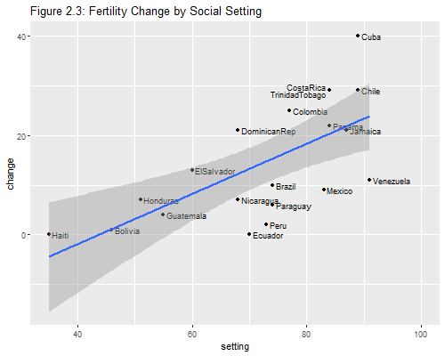

{% include r.css %}


<div id="c2s4" class="section level2 first">
<h2 class="first">2.4 Simple Linear Regression</h2>
<p>We will start with the simplest possible model, the <em>null</em>
model, which fits just a constant. But first we read the data again, so
this script can be run independently of the previous one.</p>
<pre class="r"><code>&gt; fpe &lt;- read.table(&quot;https://grodri.github.io/datasets/effort.dat&quot;) 
&gt; m0 &lt;- lm(change ~ 1, data=fpe)
&gt; m0</code></pre>
<pre><code>
Call:
lm(formula = change ~ 1, data = fpe)

Coefficients:
(Intercept)  
       14.3  </code></pre>
<p>The average fertility decline in these countries between 1965 and
1975 was 14.3%.</p>
<p>The first argument to <code>lm()</code> is a <em>model formula</em>,
which defines the response, followed by a tilde and a list of terms. In
this case the only term is <code>1</code>, representing the constant.
The <code>data</code> argument specifies the data frame to be used. The
function returns a linear model (“lm”) object that we called
<code>m0</code>. Typing this name invokes the <code>print()</code>
method, which simply lists the formula and the estimated coefficients.
For more information we use the <code>summary()</code> method:</p>
<pre class="r"><code>&gt; summary(m0)</code></pre>
<pre><code>
Call:
lm(formula = change ~ 1, data = fpe)

Residuals:
   Min     1Q Median     3Q    Max 
-14.30  -8.80  -3.80   8.45  25.70 

Coefficients:
            Estimate Std. Error t value Pr(&gt;|t|)    
(Intercept)   14.300      2.641   5.415 3.17e-05 ***
---
Signif. codes:  0 &#39;***&#39; 0.001 &#39;**&#39; 0.01 &#39;*&#39; 0.05 &#39;.&#39; 0.1 &#39; &#39; 1

Residual standard error: 11.81 on 19 degrees of freedom</code></pre>
<p>We now get standard errors and a t-test of significance. If you want
a confidence interval just call the function <code>confint()</code>.</p>
<p>If you are wondering what these statistics mean when the 20 countries
at hand are not really a random sample of the countries of the world,
see the discussion of model-based inference in the notes. Briefly, we
view the data as a sample from the universe of all the outcomes we could
have observed in these countries in the period 1965-1970.</p>
<div id="fitting-a-linear-term" class="section level3">
<h3>Fitting a Linear Term</h3>
<p>The next step is to try a linear regression of change on setting. We
do not need to specify a constant because it is always included, unless
we use <code>-1</code> to exclude it. Last time we were explicit because
the constant was the only term.</p>
<pre class="r"><code>&gt; m1 &lt;- lm(change ~ setting, data=fpe)
&gt; m1</code></pre>
<pre><code>
Call:
lm(formula = change ~ setting, data = fpe)

Coefficients:
(Intercept)      setting  
   -22.1254       0.5052  </code></pre>
<p>Each point in the social setting scale is associated with a fertility
decline of half a percent. Compare the parameter estimates with those in
table 2.3 in the lecture notes.</p>
<p>To obtain more detailed results we use again the
<code>summary()</code> function.</p>
<pre class="r"><code>&gt; summary(m1)</code></pre>
<pre><code>
Call:
lm(formula = change ~ setting, data = fpe)

Residuals:
    Min      1Q  Median      3Q     Max 
-13.239  -6.260   0.787   6.678  17.162 

Coefficients:
            Estimate Std. Error t value Pr(&gt;|t|)   
(Intercept) -22.1254     9.6416  -2.295  0.03398 * 
setting       0.5052     0.1308   3.863  0.00114 **
---
Signif. codes:  0 &#39;***&#39; 0.001 &#39;**&#39; 0.01 &#39;*&#39; 0.05 &#39;.&#39; 0.1 &#39; &#39; 1

Residual standard error: 8.973 on 18 degrees of freedom
Multiple R-squared:  0.4532,    Adjusted R-squared:  0.4228 
F-statistic: 14.92 on 1 and 18 DF,  p-value: 0.001141</code></pre>
<p>We can also obtain the analysis of variance in Table 2.4 using
<code>anova()</code></p>
<pre class="r"><code>&gt; anova(m1)</code></pre>
<pre><code>Analysis of Variance Table

Response: change
          Df Sum Sq Mean Sq F value   Pr(&gt;F)   
setting    1 1201.1 1201.08  14.919 0.001141 **
Residuals 18 1449.1   80.51                    
---
Signif. codes:  0 &#39;***&#39; 0.001 &#39;**&#39; 0.01 &#39;*&#39; 0.05 &#39;.&#39; 0.1 &#39; &#39; 1</code></pre>
<p>The total sum of squares of 2650.2 has been decomposed into 1201.1
that can be attributed to social setting and 1449.1 that remains
unexplained.</p>
</div>
<div id="computing-r-squared." class="section level3">
<h3>Computing R-Squared.</h3>
<p>Let us calculate the R-squared “by hand” as the ratio of the model
sum of squares to the total sum of squares.</p>
<p>There are a number of functions that can be used to access elements
of a linear model, for example <code>coef()</code> returns the
coefficients, <code>fitted()</code> returns the fitted values, and
<code>resid()</code> returns the residuals, or differences between
observed and fitted values. We will add our own function to compute the
residual sum of squares.</p>
<pre class="r"><code>&gt; rss &lt;- function(lmfit) {
+   sum(resid(lmfit)^2)
+ }
&gt; 1 - rss(m1)/rss(m0)</code></pre>
<pre><code>[1] 0.4532026</code></pre>
<p>Almost half the variation in fertility decline can be expressed as a
linear effect of social setting.</p>
</div>
<div id="plotting-observed-and-fitted-values." class="section level3">
<h3>Plotting Observed and Fitted Values.</h3>
<p>Let us try to reproduce Figure 2.3. We want to plot fertility change
versus setting, labeling the points with the country names and
superimposing the regression line.</p>
<p>To draw a graph we first open a graphics device, in this case
<code>png</code> to produce portable network graphics. We could draw
this graph using <code>plot()</code> for the points, <code>text()</code>
for the labels and <code>abline()</code> for the regression line, all in
base R, but we will use <code>ggplot</code> instead. When we add country
names we get some overprinting. A simple solution is to use a horizontal
adjustment <code>left</code>, so the labels come after the points,
except for Costa Rica (#5) and Trinidad-Tobago (#19), where we use
<code>right</code>, so the labels come before the points. We also use a
vertical adjustment of <code>center</code> for all, <code>top</code> for
Costa Rica, and <code>bottom</code> for Trinidad-Tobago to space these
two. We also nudge the labels a bit, so there is some space between them
and the points. Finally we extend the x-axis to leave more room for the
labels.</p>
<pre class="r"><code>&gt; png(filename = &quot;fig23r.png&quot;, width=500, height=400)
&gt; library(ggplot2)
&gt; # move TrinidadTObago and CostaRica to right and vertically above and below
&gt; hj &lt;- rep(&quot;left&quot;,nrow(fpe));    hj[c(5,19)] &lt;- &quot;right&quot;
&gt; vj &lt;- rep(&quot;center&quot;, nrow(fpe)); vj[5]=&quot;bottom&quot;; vj[19]=&quot;top&quot;
&gt; nx &lt;- rep(0.6, nrow(fpe));      nx[c(5,19)] &lt;- -0.6
&gt; ggplot(fpe, aes(setting, change, label=rownames(fpe))) + 
+   geom_point() + geom_text(hjust=hj,vjust=vj, nudge_x=nx, size=3) + 
+   geom_smooth(method=&quot;lm&quot;) + coord_cartesian(xlim=c(35, 100)) +
+   ggtitle(&quot;Figure 2.3: Fertility Change by Social Setting&quot;)</code></pre>
<pre><code>`geom_smooth()` using formula &#39;y ~ x&#39;</code></pre>
<pre class="r"><code>&gt;     dev.off()</code></pre>
<pre><code>png 
  2 </code></pre>
<p></p>
<p><em>Note:</em> The <code>plot()</code> method for linear model fits
produces four plots: residuals versus fitted values, a Q-Q plot for
normality, a scale-location plot, and a plot of residuals versus
leverages. We will learn about these statistics in <a
href="c2s9">Section 2.9</a>. If you are curious try typing
<code>par(mfrow=c(2,2))</code> and <code>plot(m1)</code>. The first call
changes the graphics device layout to show four plots in two rows and
two columns. When you are done type <code>par(mfrow=c(1,1)</code> to
restore the default.</p>
<p><em>Exercise</em>: Run the simple linear regression model for
fertility change as a function of program effort and plot the
results.</p>
<p><small>Updated fall 2022</small></p>
</div>
</div>
